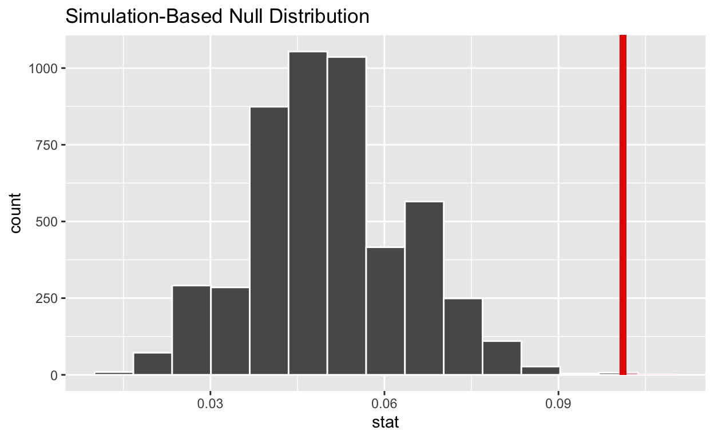

Introduction
In this tutorial you will learn the basics of simulation-based inference using the infer package. To begin we load the necessary packages. Remember, if you haven’t already installed infer, do that first.
library(tidyverse)
library(infer)Recall statistical hypothesis testing is the procedure that allows us to decide between two claims about the population parameter. We will follow a four step procedure to conduct a hypothesis.
State the null and alternative hypothesis.
Take a representative sample of the population, collect data, and summarize the data with a statistic.
Determine how likely it is to see data as or more surprising as what we observed, assuming the null hypothesis is true.
Make a decision. If our data is extremely unlikely assuming the null hypothesis is true, we reject the null hypothesis. If our data is not extremely unlikely assuming the null hypothesis is true, we fail to reject the null hypothesis.
Hypothesis Testing Steps
We will use a real example to illustrate the steps of hypothesis testing. Student cell phone use during exams (texting, searching the internet, accessing class resources, etc) is a serious breach of academic integrity. Suppose you are conducting a study of cheating in college courses and are interested in determining if more than 5% of students in a population of interest have used their cell phone during an exam.
1. State the null and alternative hypothesis
The null hypothesis is denoted \(H_o\) and represents the status quo claim that nothing unusual is going on. The alternative hypothesis is denoted \(H_a\) and states the opposite - there is something going on that merits further investigation. Both hypotheses are defined for parameters (not statistics).
Consider the null and alternative hypotheses in words below.
- \(H_o\): The true proportion of students who have used a cell phone during an exam is equal to 5%.
- \(H_a\): The true proportion of students who have used a cell phone during an exam is greater than 5%.
2. Take a representative sample of the population, collect data, and summarize the data with a statistic.
Researchers took a representative sample of 267 students, surveyed them confidentially and found that 27 had used a cell phone during an exam.
We first create a tibble with the sample data.
cheating_data <-
tibble(outcome = c(rep("text", 27), rep("no text", 267 - 27)))
glimpse(cheating_data)## Rows: 267
## Columns: 1
## $ outcome <chr> "text", "text", "text", "text", "text", "text", "text", "text…cheating_data %>%
count(outcome)3. Determine how likely it is to see data as or more surprising as what we observed, assuming the null hypothesis is true.
We next find the probability of observing data as or more extreme as what we observed, assuming \(H_o\) is true. This is called the \(p\)-value.
First, we need to know what values of \(\hat{p}\) we expect assuming the null hypothesis is true. In other words, we need to simulate a distribution for \(\hat{p}\) assuming the probability of cheating is \(0.05\).
This null distribution for \(\hat{p}\) tells us what sample proportions to expect, assuming the null hypothesis is true.
We will generate the null distribution using the infer package. We must provide the following information.
specify()
response: the outcome of interest in the appropriate data framesuccess: the level of the outcome we are interested in
hypothesize()
null: null hypothesis (point if you are doing inference on a point estimate or independence if the null assumes independence between two variables)p: appropriate probabilities of success and failure
generate()
reps: how many resamples to generatetype: simulate for hypothesis testing (we did bootstrap earlier)
calculate()our sample statistic
Fill in the blanks in the code chunk below to generate the null distribution.
set.seed(11)
null_dist <- ___ %>%
specify(response = ___, success = ___) %>%
hypothesize(
null = ___,
p = ___
) %>%
generate(reps = ___, type = ___) %>%
calculate(stat = ___)set.seed(11)
null_dist <- cheating_data %>%
specify(response = outcome, success = "text") %>%
hypothesize(
null = "point",
p = c("text" = 0.05, "no text" = 0.95)
) %>%
generate(reps = 5000, type = "simulate") %>%
calculate(stat = "prop")We examine the first few rows of null_dist.
head(null_dist)Use the visualize function in infer to visualize the null distribution.
null_dist %>%
visualize()
It remains to calculate the \(p\)-value. Recall we observed a sample proportion of \(\hat{p} = 27 / 267 \approx 0.101\) and the \(p\)-value is the probability of observing data as or more extreme as what we observed, assuming \(H_o\) is true.
We will plot the null distribution again, but this time include a red vertical line at the observed proportion \(\hat{p} = 27/267 = 0.101\).
phat <- 27 / 267
null_dist %>%
visualize() +
shade_p_value(phat,
direction = "greater"
)
Now let’s find the \(p\)-value
null_dist %>%
filter(stat >= (27 / 267)) %>%
summarize(p_value = n() / nrow(null_dist))4. Make a Decision
We reject \(H_o\) if the \(p\)-value is small. A small \(p\)-value means we are unlikely to observe something as or more extreme as what we observed assuming \(H_o\) is true.
How small is small enough? We use a threshold value called the significance or \(\alpha\) level set prior to collecting data. A common choice is \(\alpha = 0.05\). If \(H_o\) is true, we expect to make the wrong decision 5% of the time.
If the \(p\)-value is \(\alpha\) or greater, the results are not statistically significant.
Your Turn!
We will use the gss data from the infer package. This data set contains a sample of 500 entries from the General Social Survey (GSS). The GSS is a national survey of American society and opinions that has been conducted since 1972.
First, familiarize yourself with the data set and variables using the code below. You can learn more about the General Social Survey by visiting their website.
We will examine the variable sex, the respondent’s self-identified sex and are interesting if the proportion of females in the population differs from 0.50.
First, find the observed statistic. You can do this using dplyr or using specify and calculate from infer.
phat <- gss %>%
specify(response = sex, success = "female") %>%
calculate(stat = "prop") %>%
pull(stat)Next, generate the null distribution.
set.seed(42)set.seed(42)
null_dist <- gss %>%
specify(response = sex, success = "female") %>%
hypothesize(
null = "point",
p = c("female" = 0.50, "male" = 0.50)
) %>%
generate(reps = 5000, type = "simulate") %>%
calculate(stat = "prop")Visualize the null distribution using the visualize function.
null_dist %>%
visualize()Starting with the plot above, add a vertical line representing the sample statistic and shade the region corresponding to the \(p\)-value.
null_dist %>%
visualize() +
shade_p_value(phat, direction = "two-sided")Resources and References
- Infer Website
- “The Use and Abuse of Cell Phones and Text Messaging During Class: A Survey of College Students”. College Teaching, 2012.
- General Social Survey Website